All Plots
Every plot generated by the two scripts, for reference. The main writeup only shows a representative subset of these.
Part 1 - y = x² + 5 (given parabola, all 5 points)
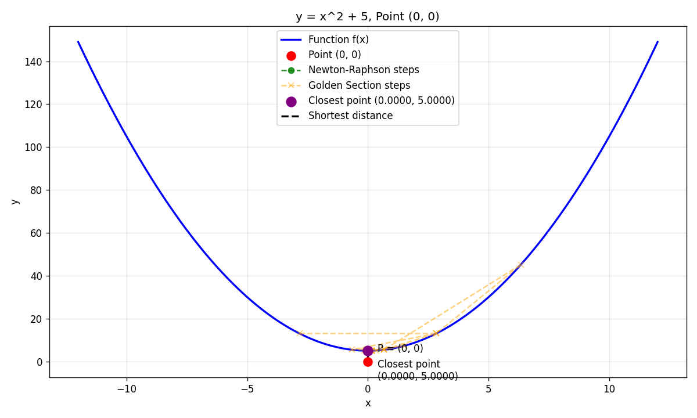
Point (0, 0)
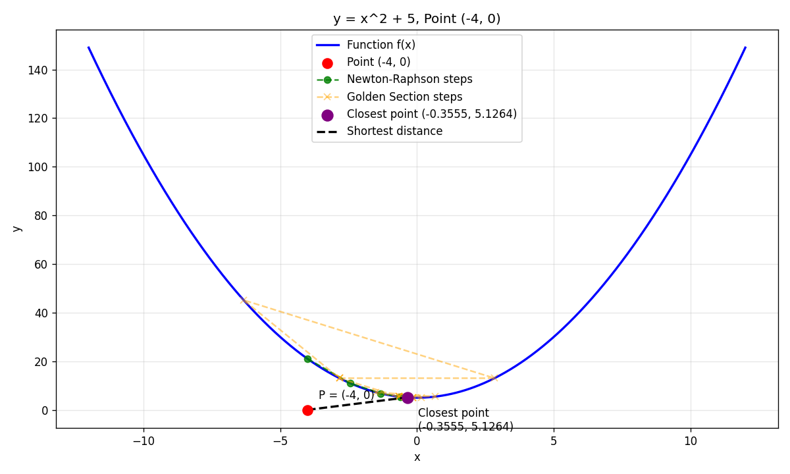
Point (−4, 0)
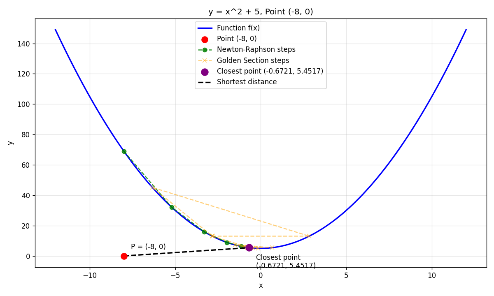
Point (−8, 0)
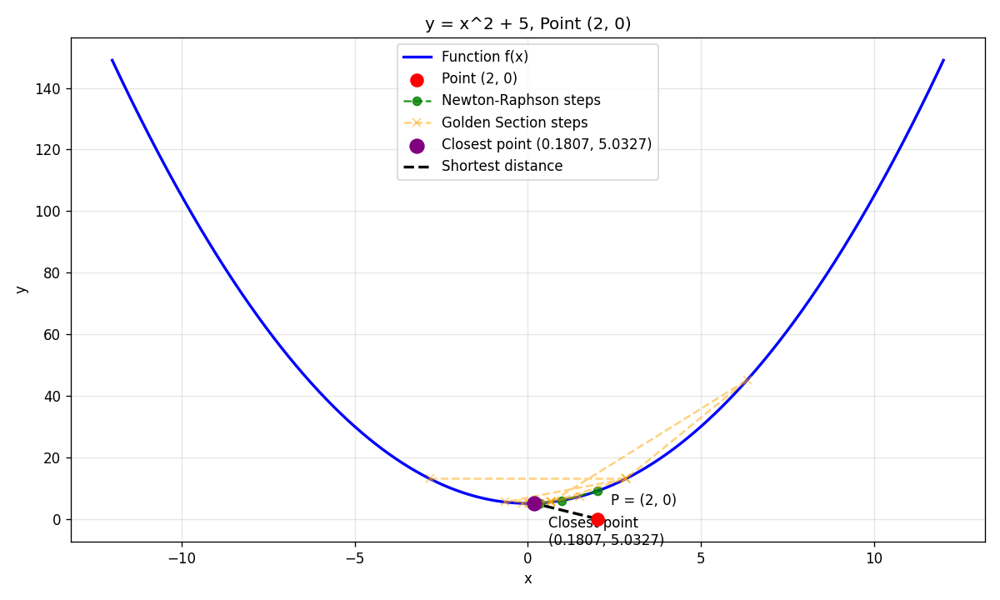
Point (2, 0)
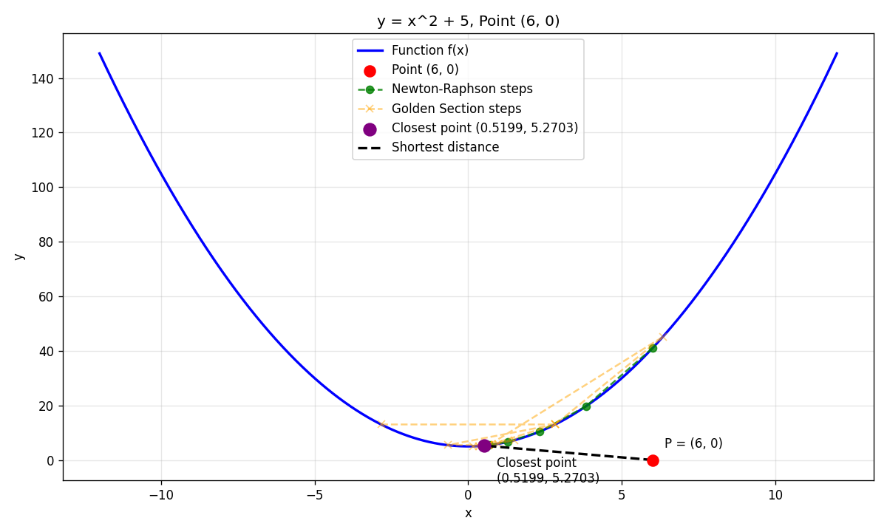
Point (6, 0)
Part 1 - y = x² − 3x + 2 (second parabola)
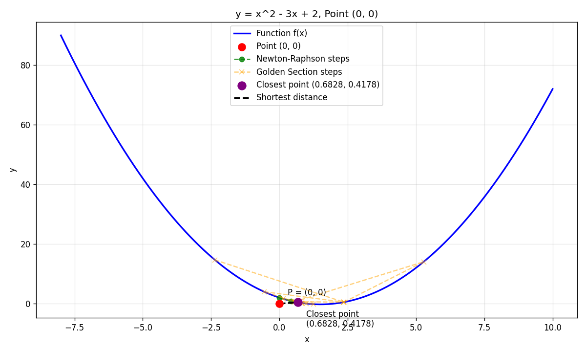
Point (0, 0)
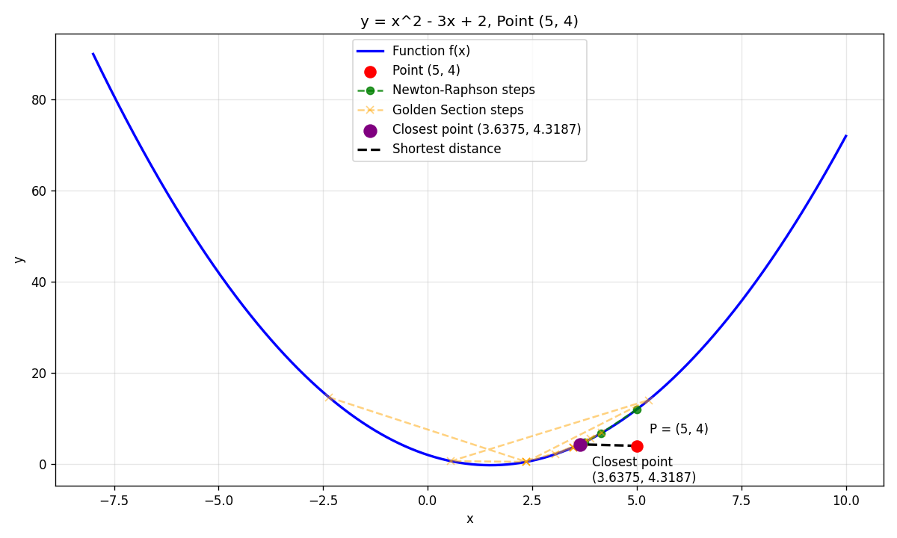
Point (5, 4)
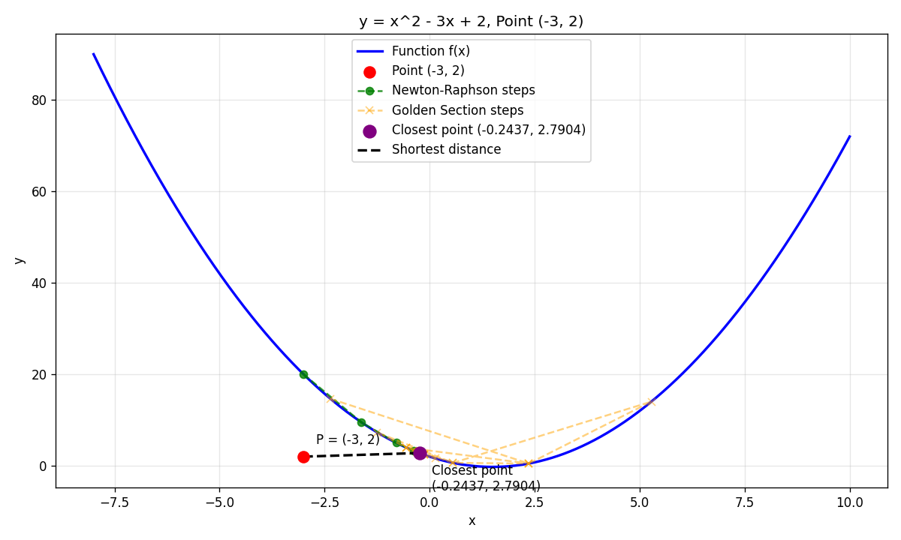
Point (−3, 2)
Part 1 - non-polynomial functions
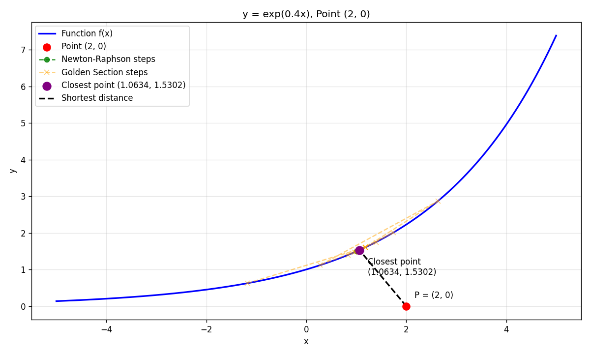
y = e^(0.4x), point (2, 0)
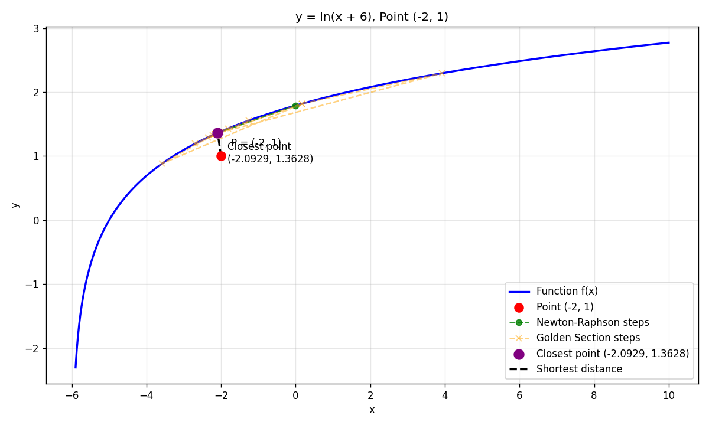
y = ln(x+6), point (−2, 1)
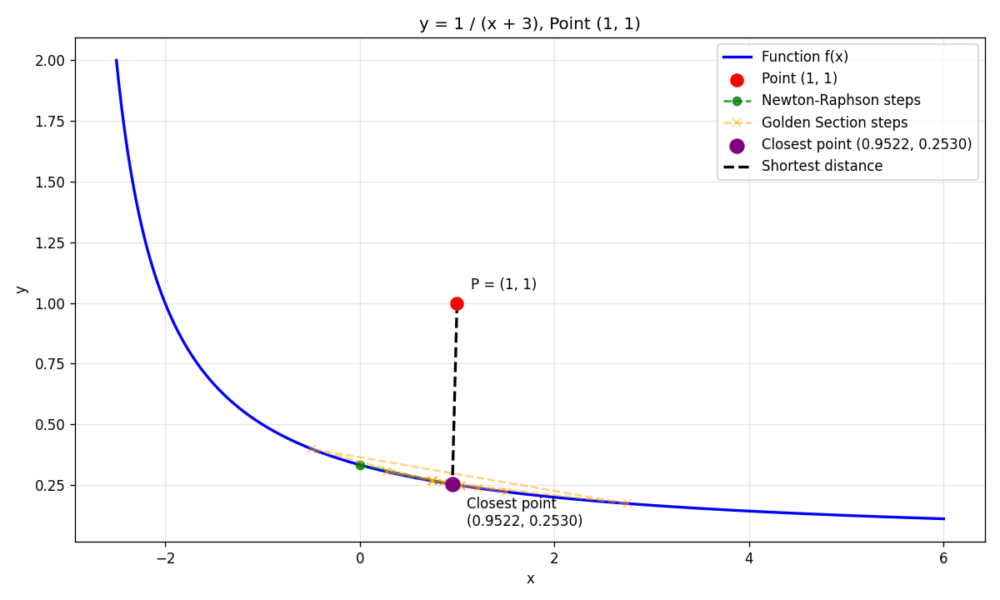
y = 1/(x+3), point (1, 1)
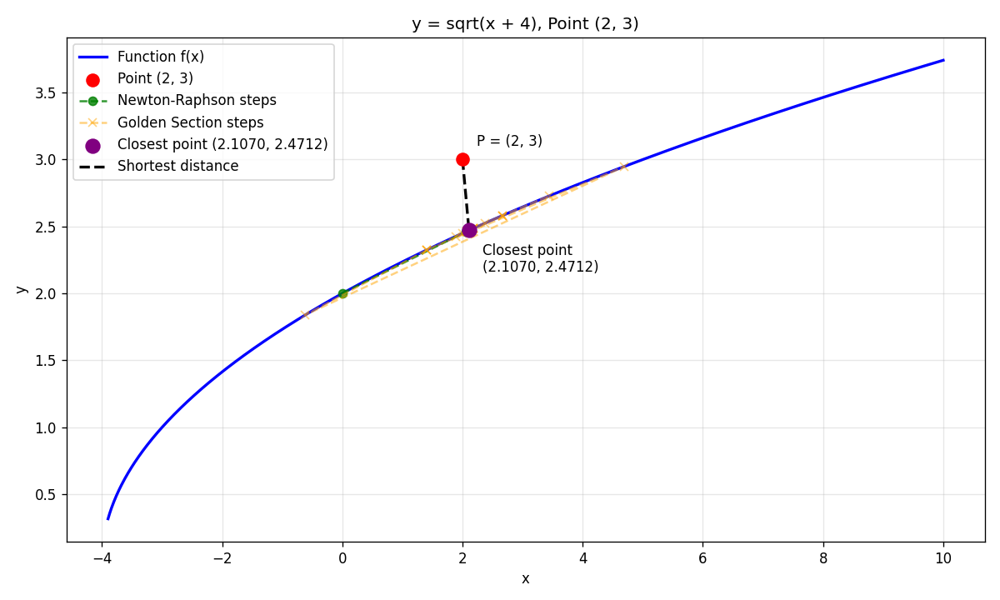
y = √(x+4), point (2, 3)
Part 2 - line and parabola fits
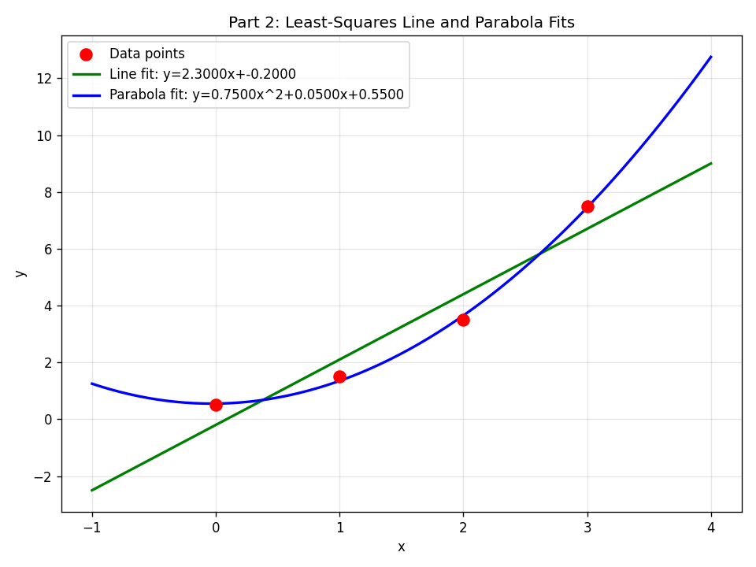
Both fits over the data
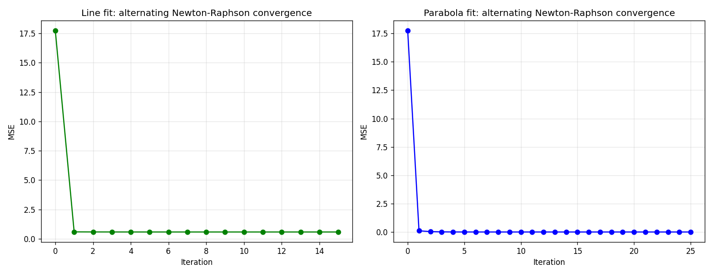
MSE vs. iteration
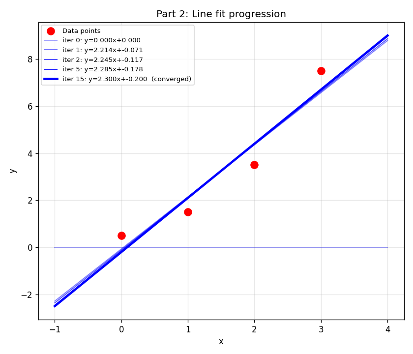
Line fit progression
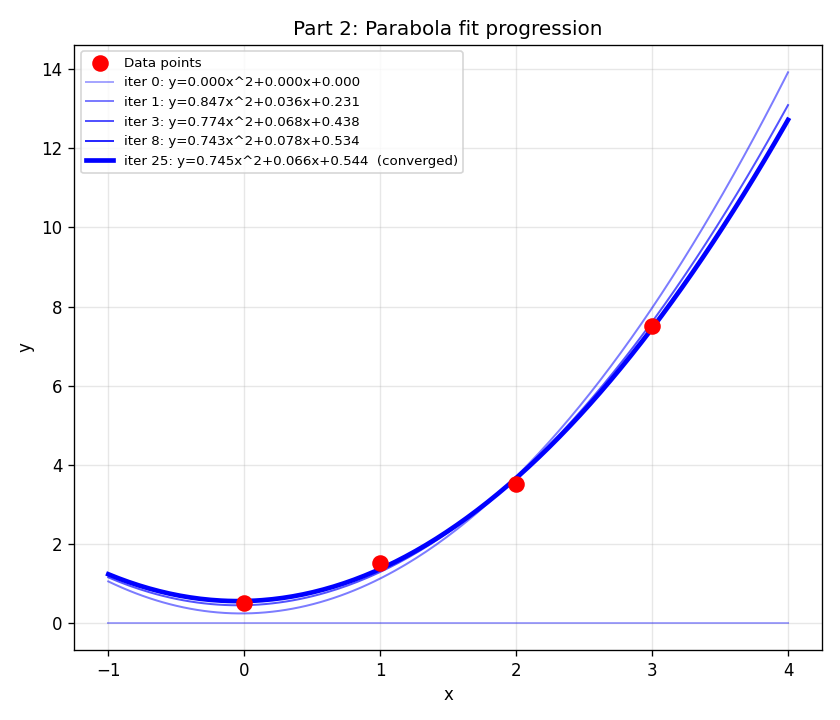
Parabola fit progression